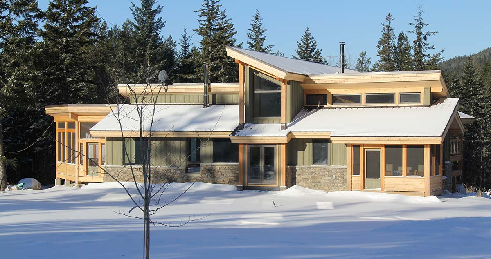

The house is on a knoll, and commands views in all directions. Kapristo Mountain stands almost directly North and there are unobstructed views East, South and West across a broad valley. Sun exposure is therefore excellent in both summer and winter.
Glazing of the large South facing picture windows was selected to take advantage of the sunny exposure. Glazing numbers.
In the summer, heat gain is not desired. Those windows that were designed for heat gain in the winter have deep overhangs that shade them in the summer as the angle of the sun increases.
